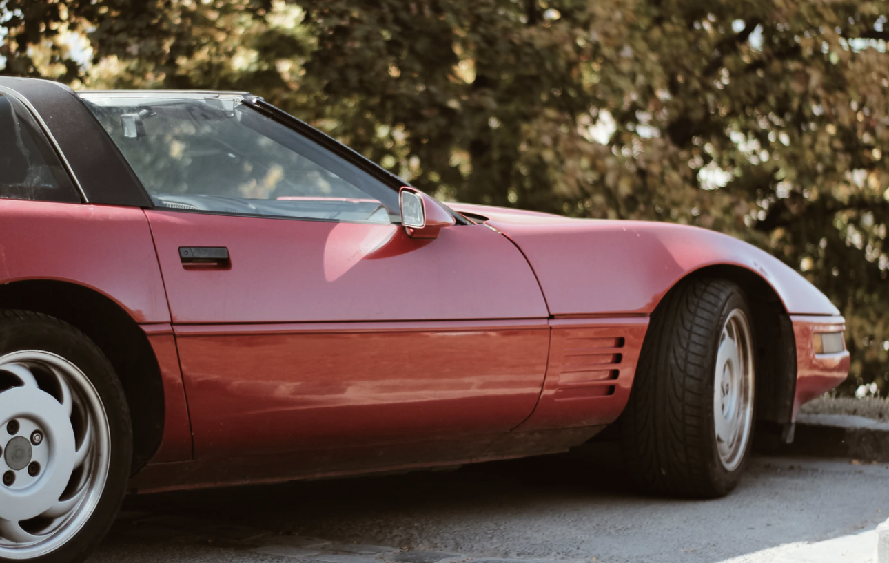

Quality First
We never compromise on the work. Every service receives the care and attention needed to deliver a finish we’re proud of.
About Double A
Experienced mobile detailing, brought to your driveway throughout Orange County.

Orange CountyBuilt on the details
At Double A Detailing, we provide high-quality care to Southern California drivers at fair, straightforward prices. Our courteous team brings the professional tools, supplies, and experience needed to care for your vehicle at your home or workplace.
We love cars and take pride in making every client feel like their vehicle is new again. Led by owner Robert Almaraz, our experienced detailers bring more than 20 years of hands-on knowledge and a genuine passion for enhancing, protecting, and maintaining every vehicle we service.
What guides us
We keep the experience simple: dependable service, professional care, and results you’re excited to drive away with.
We never compromise on the work. Every service receives the care and attention needed to deliver a finish we’re proud of.
We arrive prepared with the professional equipment and supplies needed to complete your detail properly and efficiently.
We bring affordable, timely mobile detailing directly to you, making exceptional vehicle care easier to fit into your day.
Where we work
Our primary mobile detailing area is Orange County. Service in Los Angeles, San Bernardino, and San Diego counties may be available by request—please contact us in advance.
Ready when you are